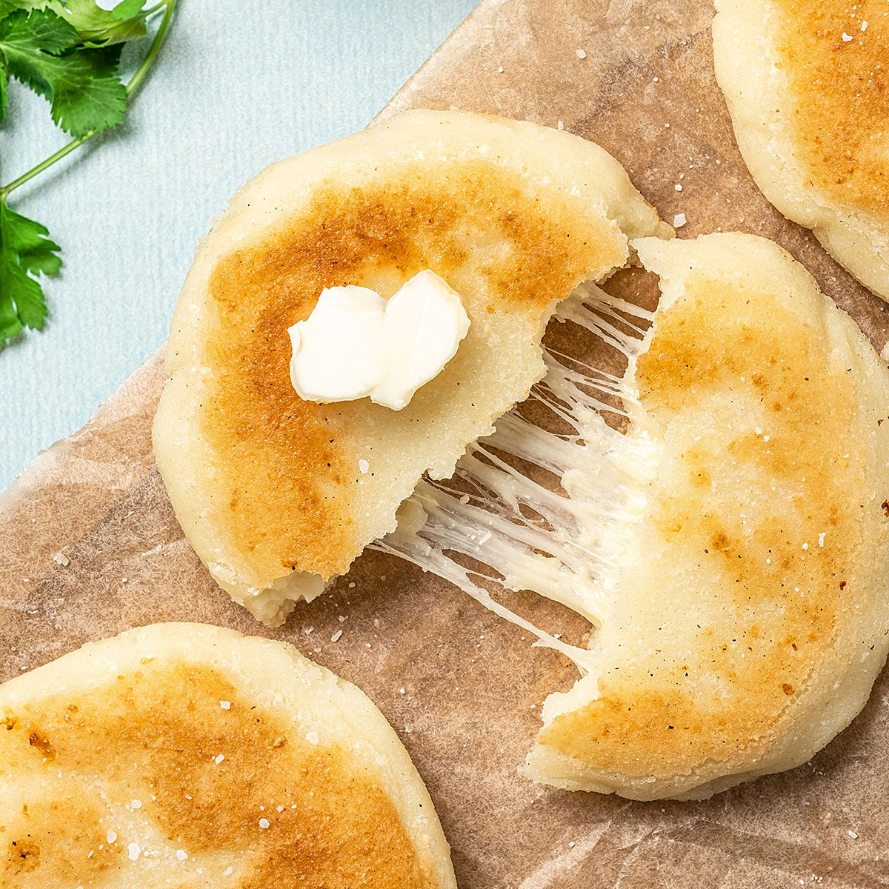

Arepas

Description
Arepas can be served for breakfast, lunch, or dinner. They are also a popular snack food. So next time you're looking for a delicious and easy-to-make meal, try arepas!
Ingredients
- 2 cups pre-cooked white cornmeal (such as P.A.N.®)
- 1 teaspoon salt
- 2 cups warm water
- 1/4 cup vegetable oil, for frying (optional)
Step by step guide
- In a large bowl, whisk together the cornmeal and salt.
- Gradually whisk in the warm water until a soft, dough forms.
- Cover the bowl with plastic wrap and let the dough rest for 10 minutes.
- Divide the dough into 8 equal pieces.
- Roll each piece of dough into a ball, then flatten it into a 4-inch circle.
- Heat a lightly oiled griddle or frying pan over medium heat.
- Cook each arepa for 2-3 minutes per side, or until golden brown and cooked through.
- Serve the arepas warm with your favorite fillings, such as cheese, shredded chicken, or avocado.
Return to the main page